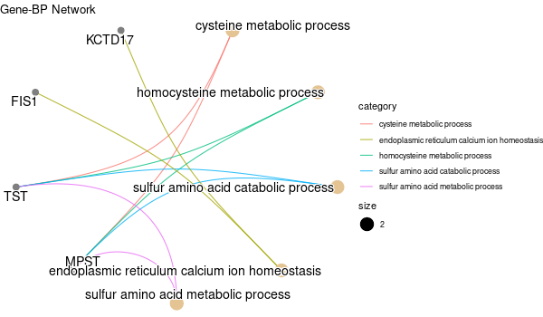
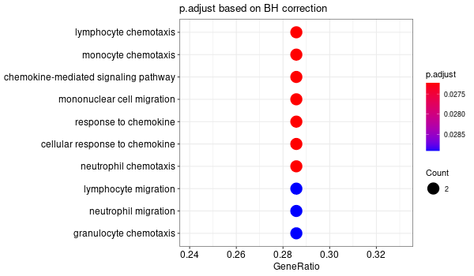
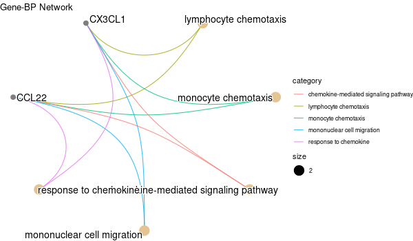
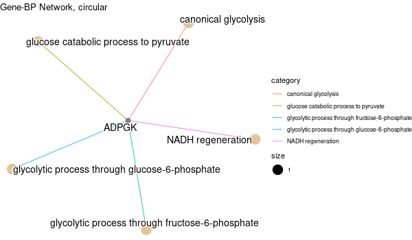
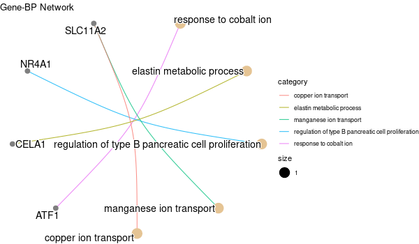
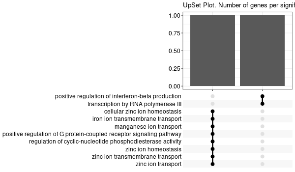
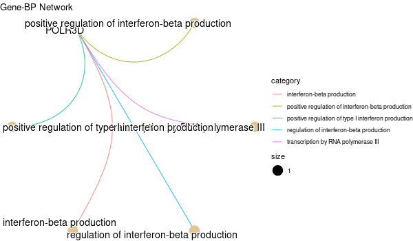
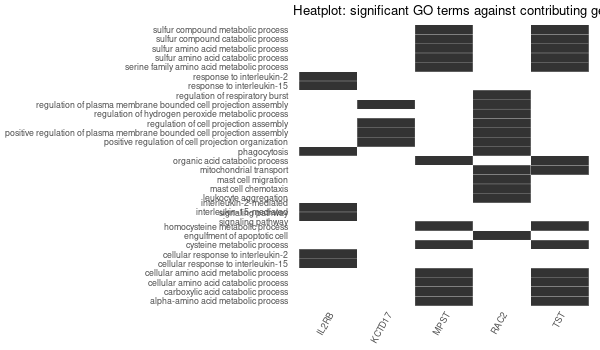

GO enrichment of all genes obtained
We use GO_enrichment_FDR.R which allows us to choose between multiple procedures for multiple testing correction. Here we are interested in controlling the FDR ; we can use either pAdjustMethod = "BH" (Benjamini-Hochberg, default parameter) or pAdjustMethod = "fdr".
All results (list of genes and detailed GO enrichment) can be found here:
/work2/project/regenet/workspace/thoellinger/shared/2022/promoter_capture_hic/
Dependencies
We use R 4.0. We need the clusterProfiler package. See custom_go.md for installation details.
Main remarks
From time to time, one may get the following error while using
GO_enrichment_FDR.R:Error in `[.data.frame`(d, , 2) : undefined columns selectedThis is expected, and should be considered as a warning only (I did not take the time to handle the case with an exception). This happens when no significant GO terms are found ; in such case, no graphical outputs are computed.
Collecting the list of genes of interest
cd /work2/project/regenet/workspace/thoellinger/shared/2022/promoter_capture_hic/We obtained this list using our R markdown doing network analysis of E-G pairs starting from genes directly involved in hemochromatosis or involved in the regulation of iron metabolism.
We saved this list of 54 (12 known + 42 inferred) genes as new_genes_v1.list. For each one of the 13 initial genes, we also saved separately the corresponding inferred genes. I a few cases, no genes were inferred starting from one of the 13 genes (+ for one of the 13, we did not have CHiC data at all):
└── results...├── 13_initial_genes.list # 13├── new_genes_v1.list # 54└── separate├── BMP6.list 1├── CIAPIN1.list # 8├── CYBRD1.list 1├── HFE2.list # 5├── HFE.list 1├── NEO1.list # 2├── SLC11A2.list # 8├── SLC39A14.list # 4├── SLC40A1.list 1├── TFR2.list # 15├── TFRC.list 1└── TMPRSS6.list # 7
GO enrichment
module load system/R-4.0.4_gcc-9.3.0All 54 genes (original + inferred)
mkdir -p GO_FDR/all_genes/symbolRscript GO_enrichment_FDR.R -k "SYMBOL" -G results/new_genes_v1.list -f 0.05 -c "BP" -a "BH" -o "default_universe" -d "GO_FDR/all_genes/symbol"...[1] "Loading input data..."[1] "Warning: using defaut universe automatically provided by the clusterProfiler package"[1] "Done."[1] "Computing GO enrichment..."`universe` is not in character and will be ignored...[1] "Done."[1] "18866 (default) background genes"[1] "54 provided genes; 49 found by `enrichGO`"[1] "Computed GO enrichment (whether significant or not) for 1086 distinct GO terms"[1] "Of those 1086 GO terms, 18 have a BH-adjusted p-val < 0.05"[1] "Writing outputs tables..."[1] "Done. Writing output images..."...[1] "Done."


All 42 genes (inferred only ; w/o original genes)
mkdir -p GO_FDR/all_genes_wo_orig/symbolRscript GO_enrichment_FDR.R -k "SYMBOL" -G results/new_genes_v1_without_original.list -f 0.05 -c "BP" -a "BH" -o "default_universe" -d "GO_FDR/all_genes_wo_orig/symbol"...[1] "Loading input data..."[1] "Warning: using defaut universe automatically provided by the clusterProfiler package"[1] "Done."[1] "Computing GO enrichment..."`universe` is not in character and will be ignored...[1] "Done."[1] "18866 (default) background genes"[1] "42 provided genes; 38 found by `enrichGO`"[1] "Computed GO enrichment (whether significant or not) for 740 distinct GO terms"[1] "Of those 740 GO terms, 0 have a BH-adjusted p-val < 0.05"[1] "Writing outputs tables..."[1] "Done. Writing output images..."...[1] "Done."
All genes co-expressed in liver
Those are: HFE + TFR2 + HJV (HFE2) + HAMP + TMPRSS6
Note: we have no CHiC data for HAMP, and there are no inferred genes from HFE.
mkdir -p GO_FDR/genes_inferred_from_that_expressed_in_liver/symbolRscript GO_enrichment_FDR.R -k "SYMBOL" -G results/genes_inferred_from_that_expressed_in_liver.list -f 0.05 -c "BP" -a "BH" -o "default_universe" -d "GO_FDR/genes_inferred_from_that_expressed_in_liver/symbol"...[1] "Loading input data..."[1] "Warning: using defaut universe automatically provided by the clusterProfiler package"[1] "Done."[1] "Computing GO enrichment..."`universe` is not in character and will be ignored...[1] "Done."[1] "18866 (default) background genes"[1] "24 provided genes; 21 found by `enrichGO`"[1] "Computed GO enrichment (whether significant or not) for 421 distinct GO terms"[1] "Of those 421 GO terms, 4 have a BH-adjusted p-val < 0.05"[1] "Writing outputs tables..."[1] "Done. Writing output images..."...[1] "Done."




All genes expressed in intestine
Those are: DCYTB (CYBRD1) / DMT1 (SLC11A2) / SLC40A1
Note: there are no inferred genes from CYBRD1 nor SLC40A1 => so the GO enrichment is basically that of SLC11A2. Please refer to the above section.
Each original gene separately
Inferred from CIAPIN1
mkdir -p GO_FDR/separate/CIAPIN1/symbolRscript GO_enrichment_FDR.R -k "SYMBOL" -G results/separate/CIAPIN1.list -f 0.05 -c "BP" -a "BH" -o "default_universe" -d "GO_FDR/separate/CIAPIN1/symbol"...[1] "Loading input data..."[1] "Warning: using defaut universe automatically provided by the clusterProfiler package"[1] "Done."[1] "Computing GO enrichment..."`universe` is not in character and will be ignored...[1] "Done."[1] "18866 (default) background genes"[1] "8 provided genes; 7 found by `enrichGO`"[1] "Computed GO enrichment (whether significant or not) for 313 distinct GO terms"[1] "Of those 313 GO terms, 64 have a BH-adjusted p-val < 0.05"[1] "Writing outputs tables..."[1] "Done. Writing output images..."...[1] "Done."





Inferred from CIAPIN1 w/o CIAPIN1
mkdir -p GO_FDR/separate/CIAPIN1_wo_orig/symbolRscript GO_enrichment_FDR.R -k "SYMBOL" -G results/separate/CIAPIN1_wo_original.list -f 0.05 -c "BP" -a "BH" -o "default_universe" -d "GO_FDR/separate/CIAPIN1_wo_orig/symbol"...[1] "Loading input data..."[1] "Warning: using defaut universe automatically provided by the clusterProfiler package"[1] "Done."[1] "Computing GO enrichment..."`universe` is not in character and will be ignored...[1] "Done."[1] "18866 (default) background genes"[1] "7 provided genes; 6 found by `enrichGO`"[1] "Computed GO enrichment (whether significant or not) for 310 distinct GO terms"[1] "Of those 310 GO terms, 73 have a BH-adjusted p-val < 0.05"[1] "Writing outputs tables..."[1] "Done. Writing output images..."...[1] "Done."


Inferred from HFE2
mkdir -p GO_FDR/separate/HFE2/symbolRscript GO_enrichment_FDR.R -k "SYMBOL" -G results/separate/HFE2.list -f 0.05 -c "BP" -a "BH" -o "default_universe" -d "GO_FDR/separate/HFE2/symbol"...[1] "Loading input data..."[1] "Warning: using defaut universe automatically provided by the clusterProfiler package"[1] "Done."[1] "Computing GO enrichment..."`universe` is not in character and will be ignored...[1] "Done."[1] "18866 (default) background genes"[1] "5 provided genes; 3 found by `enrichGO`"[1] "Computed GO enrichment (whether significant or not) for 17 distinct GO terms"[1] "Of those 17 GO terms, 15 have a BH-adjusted p-val < 0.05"[1] "Writing outputs tables..."[1] "Done. Writing output images..."...[1] "Done."


Inferred from HFE2 w/o HFE2
mkdir -p GO_FDR/separate/HFE2_wo_orig/symbolRscript GO_enrichment_FDR.R -k "SYMBOL" -G results/separate/HFE2_wo_original.list -f 0.05 -c "BP" -a "BH" -o "default_universe" -d "GO_FDR/separate/HFE2_wo_orig/symbol"...[1] "Loading input data..."[1] "Warning: using defaut universe automatically provided by the clusterProfiler package"[1] "Done."[1] "Computing GO enrichment..."`universe` is not in character and will be ignored...[1] "Done."[1] "18866 (default) background genes"[1] "4 provided genes; 3 found by `enrichGO`"[1] "Computed GO enrichment (whether significant or not) for 17 distinct GO terms"[1] "Of those 17 GO terms, 15 have a BH-adjusted p-val < 0.05"[1] "Writing outputs tables..."[1] "Done. Writing output images..."...[1] "Done."


Inferred from NEO1
mkdir -p GO_FDR/separate/NEO1/symbolRscript GO_enrichment_FDR.R -k "SYMBOL" -G results/separate/NEO1.list -c "BP" -a "BH" -o "default_universe" -d "GO_FDR/separate/NEO1/symbol"...[1] "Loading input data..."[1] "Warning: using defaut universe automatically provided by the clusterProfiler package"[1] "Done."[1] "Computing GO enrichment..."`universe` is not in character and will be ignored...[1] "Done."[1] "18866 (default) background genes"[1] "2 provided genes; 2 found by `enrichGO`"[1] "Computed GO enrichment (whether significant or not) for 45 distinct GO terms"[1] "Of those 45 GO terms, 45 have a BH-adjusted p-val < 0.1"[1] "Writing outputs tables..."[1] "Done. Writing output images..."...[1] "Done."




Inferred from NEO1 w/o NEO1
mkdir -p GO_FDR/separate/NEO1_wo_orig/symbolRscript GO_enrichment_FDR.R -k "SYMBOL" -G results/separate/NEO1_wo_original.list -c "BP" -a "BH" -o "default_universe" -d "GO_FDR/separate/NEO1_wo_orig/symbol"...[1] "Loading input data..."[1] "Warning: using defaut universe automatically provided by the clusterProfiler package"[1] "Done."[1] "Computing GO enrichment..."`universe` is not in character and will be ignored...[1] "Done."[1] "18866 (default) background genes"[1] "1 provided genes; 1 found by `enrichGO`"[1] "Computed GO enrichment (whether significant or not) for 31 distinct GO terms"[1] "Of those 31 GO terms, 31 have a BH-adjusted p-val < 0.1"[1] "Writing outputs tables..."[1] "Done. Writing output images..."wrong orderBy parameter; set to default `orderBy = "x"`[1] "Writing last output image (this one might take some time)..."`universe` is not in character and will be ignored...No gene set have size > 10 ...--> return NULL...Warning message:The `add` argument of `group_by()` is deprecated as of dplyr 1.0.0.Please use the `.add` argument instead.This warning is displayed once every 8 hours.Call `lifecycle::last_warnings()` to see where this warning was generated.Error in UseMethod("mutate") :no applicable method for 'mutate' applied to an object of class "NULL"Calls: pbar -> %>% -> ggplot -> summarise -> group_by -> mutateExecution halted


Inferred from SLC11A2
mkdir -p GO_FDR/separate/SLC11A2/symbolRscript GO_enrichment_FDR.R -k "SYMBOL" -G results/separate/SLC11A2.list -c "BP" -a "BH" -o "default_universe" -d "GO_FDR/separate/SLC11A2/symbol"...[1] "Loading input data..."[1] "Warning: using defaut universe automatically provided by the clusterProfiler package"[1] "Done."[1] "Computing GO enrichment..."`universe` is not in character and will be ignored...[1] "Done."[1] "18866 (default) background genes"[1] "8 provided genes; 8 found by `enrichGO`"[1] "Computed GO enrichment (whether significant or not) for 104 distinct GO terms"[1] "Of those 104 GO terms, 18 have a BH-adjusted p-val < 0.1"[1] "Writing outputs tables..."[1] "Done. Writing output images..."...[1] "Done."





Inferred from SLC11A2 w/o SLC11A2
mkdir -p GO_FDR/separate/SLC11A2_wo_orig/symbolRscript GO_enrichment_FDR.R -k "SYMBOL" -G results/separate/SLC11A2_wo_original.list -c "BP" -a "BH" -o "default_universe" -d "GO_FDR/separate/SLC11A2_wo_orig/symbol"...[1] "Loading input data..."[1] "Warning: using defaut universe automatically provided by the clusterProfiler package"[1] "Done."[1] "Computing GO enrichment..."`universe` is not in character and will be ignored...[1] "Done."[1] "18866 (default) background genes"[1] "7 provided genes; 7 found by `enrichGO`"[1] "Computed GO enrichment (whether significant or not) for 68 distinct GO terms"[1] "Of those 68 GO terms, 0 have a BH-adjusted p-val < 0.1"[1] "Writing outputs tables..."[1] "Done. Writing output images..."Error in `[.data.frame`(d, , 2) : undefined columns selectedCalls: upsetplot ... eval_tidy -> split -> split.default -> [ -> [.data.frameExecution halted
Inferred from SLC39A14
mkdir -p GO_FDR/separate/SLC39A14/symbolRscript GO_enrichment_FDR.R -k "SYMBOL" -G results/separate/SLC39A14.list -c "BP" -a "BH" -o "default_universe" -d "GO_FDR/separate/SLC39A14/symbol"...[1] "Loading input data..."[1] "Warning: using defaut universe automatically provided by the clusterProfiler package"[1] "Done."[1] "Computing GO enrichment..."`universe` is not in character and will be ignored...[1] "Done."[1] "18866 (default) background genes"[1] "4 provided genes; 4 found by `enrichGO`"[1] "Computed GO enrichment (whether significant or not) for 70 distinct GO terms"[1] "Of those 70 GO terms, 69 have a BH-adjusted p-val < 0.1"[1] "Writing outputs tables..."[1] "Done. Writing output images..."...[1] "Done."




Inferred from SLC39A14 w/o SLC39A14
mkdir -p GO_FDR/separate/SLC39A14_wo_orig/symbolRscript GO_enrichment_FDR.R -k "SYMBOL" -G results/separate/SLC39A14_wo_original.list -c "BP" -a "BH" -o "default_universe" -d "GO_FDR/separate/SLC39A14_wo_orig/symbol"...[1] "Loading input data..."[1] "Warning: using defaut universe automatically provided by the clusterProfiler package"[1] "Done."[1] "Computing GO enrichment..."`universe` is not in character and will be ignored...[1] "Done."[1] "18866 (default) background genes"[1] "3 provided genes; 3 found by `enrichGO`"[1] "Computed GO enrichment (whether significant or not) for 19 distinct GO terms"[1] "Of those 19 GO terms, 19 have a BH-adjusted p-val < 0.1"[1] "Writing outputs tables..."[1] "Done. Writing output images..."...[1] "Done."





Inferred from TFR2
mkdir -p GO_FDR/separate/TFR2/symbolRscript GO_enrichment_FDR.R -k "SYMBOL" -G results/separate/TFR2.list -c "BP" -a "BH" -o "default_universe" -d "GO_FDR/separate/TFR2/symbol"...[1] "Loading input data..."[1] "Warning: using defaut universe automatically provided by the clusterProfiler package"[1] "Done."[1] "Computing GO enrichment..."`universe` is not in character and will be ignored...[1] "Done."[1] "18866 (default) background genes"[1] "15 provided genes; 14 found by `enrichGO`"[1] "Computed GO enrichment (whether significant or not) for 305 distinct GO terms"[1] "Of those 305 GO terms, 0 have a BH-adjusted p-val < 0.1"[1] "Writing outputs tables..."[1] "Done. Writing output images..."Error in `[.data.frame`(d, , 2) : undefined columns selectedCalls: upsetplot ... eval_tidy -> split -> split.default -> [ -> [.data.frameExecution halted
No significant enrichment found in any GO term.
Inferred from TFR2 w/o TFR2
mkdir -p GO_FDR/separate/TFR2_wo_orig/symbolRscript GO_enrichment_FDR.R -k "SYMBOL" -G results/separate/TFR2_wo_original.list -c "BP" -a "BH" -o "default_universe" -d "GO_FDR/separate/TFR2_wo_orig/symbol"...[1] "Loading input data..."[1] "Warning: using defaut universe automatically provided by the clusterProfiler package"[1] "Done."[1] "Computing GO enrichment..."`universe` is not in character and will be ignored...[1] "Done."[1] "18866 (default) background genes"[1] "14 provided genes; 13 found by `enrichGO`"[1] "Computed GO enrichment (whether significant or not) for 276 distinct GO terms"[1] "Of those 276 GO terms, 0 have a BH-adjusted p-val < 0.1"[1] "Writing outputs tables..."[1] "Done. Writing output images..."Error in `[.data.frame`(d, , 2) : undefined columns selectedCalls: upsetplot ... eval_tidy -> split -> split.default -> [ -> [.data.frameExecution halted
No significant enrichment found in any GO term.
Inferred from TMPRSS6
mkdir -p GO_FDR/separate/TMPRSS6/symbolRscript GO_enrichment_FDR.R -k "SYMBOL" -G results/separate/TMPRSS6.list -f 0.05 -c "BP" -a "BH" -o "default_universe" -d "GO_FDR/separate/TMPRSS6/symbol"...[1] "Loading input data..."[1] "Warning: using defaut universe automatically provided by the clusterProfiler package"[1] "Done."[1] "Computing GO enrichment..."`universe` is not in character and will be ignored...[1] "Done."[1] "18866 (default) background genes"[1] "7 provided genes; 6 found by `enrichGO`"[1] "Computed GO enrichment (whether significant or not) for 185 distinct GO terms"[1] "Of those 185 GO terms, 46 have a BH-adjusted p-val < 0.05"[1] "Writing outputs tables..."[1] "Done. Writing output images..."...[1] "Done."





Inferred from TMPRSS6 w/o TMPRSS6
mkdir -p GO_FDR/separate/TMPRSS6_wo_orig/symbolRscript GO_enrichment_FDR.R -k "SYMBOL" -G results/separate/TMPRSS6_wo_original.list -f 0.05 -c "BP" -a "BH" -o "default_universe" -d "GO_FDR/separate/TMPRSS6_wo_orig/symbol"...[1] "Loading input data..."[1] "Warning: using defaut universe automatically provided by the clusterProfiler package"[1] "Done."[1] "Computing GO enrichment..."`universe` is not in character and will be ignored...[1] "Done."[1] "18866 (default) background genes"[1] "6 provided genes; 5 found by `enrichGO`"[1] "Computed GO enrichment (whether significant or not) for 165 distinct GO terms"[1] "Of those 165 GO terms, 69 have a BH-adjusted p-val < 0.05"[1] "Writing outputs tables..."[1] "Done. Writing output images..."...[1] "Done."